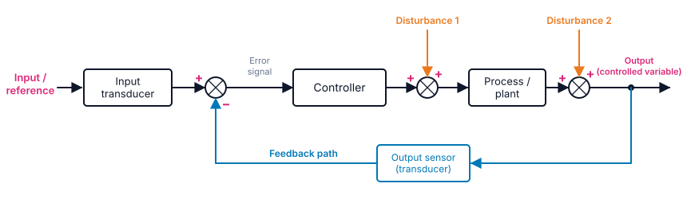
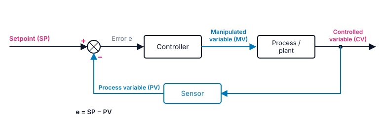
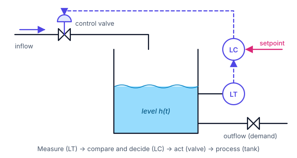
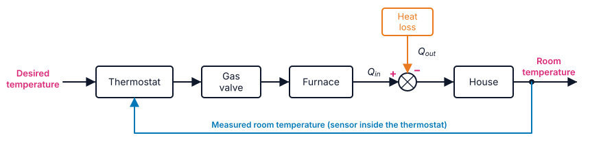
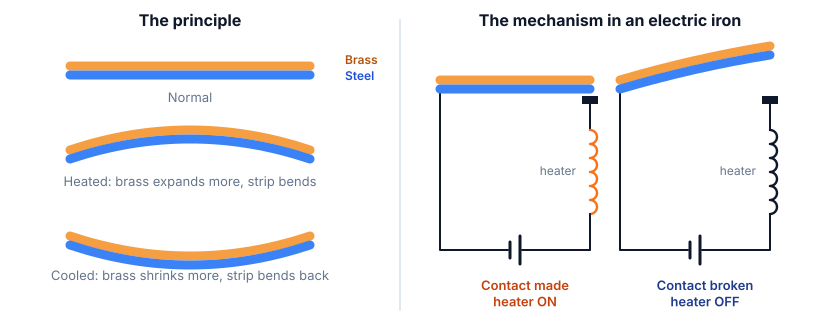
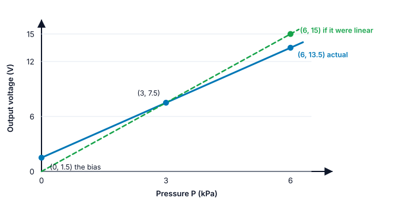

Control is everywhere, from the cosmos to our cells. Process plants and factories, aircraft and spacecraft, our own bodies (insulin and glucagon keep blood sugar steady) and our eyes following a moving object are all control systems. They are the hidden mechanisms that make sure we get the outcome we want.
What is a control system?
A system is an organized collection of parts that work together to reach a goal. A control system is put together to obtain a desired output for a given input. It manages, commands, directs or regulates the behaviour of other devices or systems: the speed of a motor, the voltage of a generator, the temperature of an oven or the angle of a robot joint.
In its simplest form it is one block: the input is the desired response and the output is the actual response.
A short history of automatic control
| When | Invention | Why it matters |
|---|---|---|
| About 300 BC | Water clock of Ktesibios | One of the first known feedback devices. A float valve held the water level constant, so the clock kept accurate time. |
| 1788 | James Watt's fly-ball governor | Spinning balls fly outward as a steam engine speeds up and close the steam valve. It regulated engine speed automatically and became a cornerstone of the Industrial Revolution. |
| 1922 | PID controller | The proportional-integral-derivative controller became the workhorse of industrial process control for the next century (see Lesson 10). |
Two core philosophies: open loop and closed loop
Every control system makes one choice: does it act on a pre-set plan, or does it adapt to the actual result? An open-loop system is like a chef who follows a recipe exactly without ever tasting the food. A closed-loop (feedback) system is like a chef who keeps tasting and adjusting the seasoning until the flavour is right. The critical difference is one question: does the system use feedback? Open loop acts without checking; closed loop acts, measures and corrects.
Open loop: "fire and forget"

The control action is completely independent of the output. The system follows its instructions whatever the outcome, so it cannot correct errors or adapt to unexpected changes. Everyday examples:
- Toaster: runs for a pre-set time, however brown the toast actually is.
- Washing machine: follows a pre-programmed cycle, however clean the clothes are.
- Hand dryer: blows hot air while hands are present, not until they are dry.
Open-loop systems are simple, inexpensive and reliable when the task is predictable and precision is not critical.
Closed loop: the power of feedback

The system measures its own output and compares it with the desired input to keep the error small all the time. This loop lets it correct itself and stay accurate even when unexpected disturbances act on it. Feedback does three jobs:
- Rejecting disturbances: a home thermostat holds 21 °C by fighting outside changes such as a cold draft through a window.
- Ignoring variations: cruise control holds 100 km/h despite changes inside the system such as added weight or hills.
- Following commands: an aircraft autopilot holds a heading such as 90° East by correcting for forces like side-winds.
The same principles appear in biological, industrial and robotic systems:
| System | Command (setpoint) | Disturbance | Variation |
|---|---|---|---|
| Human body | 37 °C body temperature | Cold weather | High activity or exercise |
| Industrial robot | A given (x, y) position | Physical obstruction | Wear and tear on joints |
| Drone | "Stay level" | Gust of wind | Battery voltage dropping |
Anatomy of a feedback system

- Setpoint (SP): the desired value or target we want to achieve.
- Process variable (PV): the actual measured output of the system.
- Error: $e = \text{SP} - \text{PV}$, formed at the summing junction.
- Controller: the "brain" that compares SP and PV, calculates the error and decides on a corrective action.
- Manipulated variable (MV): the quantity the controller adjusts to influence the process (for example, a valve opening).
- Controlled variable (CV): the output of the process that we want to control.
- Sensor (output transducer): the device that measures the process variable.
Head to head: open loop vs closed loop
| Open loop | Closed loop (feedback) | |
|---|---|---|
| Feedback | No | Yes, the output is measured and compared with the reference |
| Accuracy | Low, sensitive to disturbances | High, rejects disturbances |
| Complexity | Simple design | More complex design |
| Cost | Cheap | Costly (sensor and controller) |
| Stability | Generally stable | Can become unstable (hunting or oscillation) |
| Example | Toaster with a timer, traffic lights on a fixed cycle | Room air conditioner, automatic voltage regulator |
For a closed loop with forward path $G(s)$ and feedback $H(s)$, the closed-loop transfer function is
$$\frac{C(s)}{R(s)} = \frac{G(s)}{1 + G(s)H(s)}$$

Tying it together: a home thermostat
One of the most common closed-loop systems. Its goal is simple: keep a comfortable room temperature despite changes in the outside world.

- Setpoint: the temperature you dial in.
- Controller and sensor: the thermostat contains a sensor (a bimetallic strip or a thermistor) to measure the current temperature, and a controller to compare it with the setpoint.
- Actuator and process: the gas valve and furnace generate the heat $Q_{in}$.
- Disturbance: cold outside air constantly lowers the room temperature through the heat loss $Q_{out}$.
- Process variable: the actual room air temperature, fed back to the thermostat.
Control in action. Watch this system over 16 hours while the outside temperature slowly drops from about 55 °F to 50 °F (the disturbance). The room temperature oscillates slightly around the setpoint, and the furnace switches on more and more often to correct the error between desired and actual temperature.
How does an everyday object "think"? The electric iron
An electric iron holds a set temperature without anyone watching it. How does it know when it is hot enough, and when to switch the heating element back on? This automatic decision-making is the essence of a control system, and in a simple iron it is done by a bimetallic strip.

The principle. Two different metals (for example steel and brass) are bonded together. Each has a different coefficient of thermal expansion, and brass expands more than steel when heated, so the strip bends when its temperature changes.
The mechanism.
- Heating: current flows, the strip heats up and begins to bend.
- Contact break: at the set temperature the strip has bent enough to break the electrical contact, switching the heating element off.
- Cooling: the strip cools, straightens and makes contact again, turning the heater back on.
Effects of feedback
- Reduces the sensitivity of the output to changes in $G(s)$.
- Reduces the effect of disturbances and noise inside the loop.
- Changes the speed of response and the bandwidth.
- Reduces the overall gain, and can cause instability.
Classification of control systems
The bimetallic strip is an elegant solution, but engineering more complex systems, from aerospace guidance to industrial automation, needs a precise shared vocabulary. To analyse, design and predict a system's behaviour we first classify it. Any control system can be described by a combination of these classes, and the class tells the engineer which tools to use.

1. Linear vs nonlinear (mathematical behaviour)
A linear system obeys the principle of superposition, which has two parts:
- Homogeneity (scaling): $f(\alpha x) = \alpha f(x)$
- Additivity: $f(x + y) = f(x) + f(y)$
A nonlinear system does not satisfy homogeneity and additivity; for example $y(t) = u(t)^2$. Note that a straight line is not enough: $y(t) = 3u(t) + 5$ plots as a straight line, but its constant offset makes it fail the scaling test, as this case study shows.
Why a bias breaks linearity: a pressure transducer. The sensor follows the affine model $V_{out} = S\,P + V_{bias}$ with sensitivity $S = 2.0$ V/kPa and bias $V_{bias} = 1.5$ V (the output at zero pressure).
- Baseline: at $P = 3$ kPa, $V_{out} = 2.0 \times 3 + 1.5 = 7.5$ V.
- Double the input ($k = 2$): $P = 6$ kPa.
- New output: $V_{out} = 2.0 \times 6 + 1.5 = 13.5$ V. A linear system would give $2 \times 7.5 = 15.0$ V.
Since $13.5 \ne 15.0$, the scaling property fails: doubling the input increased the output by only 80 %. The whole 1.5 V difference comes from the bias, which does not scale when the pressure scales.

The analyst's dilemma: realism vs simplicity. Linear control systems are idealized models made by the analyst purely to simplify analysis and design.
| Nonlinear systems (the real world) | Linear systems (the engineer's model) |
|---|---|
|
|
2. Time-invariant vs time-variant (the influence of time)
In a time-invariant system the characteristics do not depend on time, so the input-output relationship stays the same: $y(t) = -2u(t) + 12$ (the coefficients $-2$ and $12$ are constant). In a time-variant system one or more parameters change with time, so the same input gives a different output depending on when it is applied: $y(t) = 2t\,u(t) - 3t$ (the coefficients $2t$ and $3t$ change with time).
3. Lumped vs distributed parameter (the mathematical model)
Lumped-parameter systems are described by ordinary differential equations (ODEs). We assume properties such as mass, resistance and capacitance are concentrated at single points, for example $M\dfrac{d^2x}{dt^2} + C\dfrac{dx}{dt} + kx = f(t)$.
Distributed-parameter systems must be described by partial differential equations (PDEs), because the properties are spread through space and cannot be concentrated at a point, for example heat flowing along a rod: $\dfrac{\partial f}{\partial t} = \alpha\left(\dfrac{\partial^2 f}{\partial x^2} + \dfrac{\partial^2 f}{\partial y^2}\right)$.
4. Continuous vs discrete data (the nature of the data)
In a continuous-data system all variables are functions of continuous time $t$, defined at every instant; for example speed control of a DC motor by an analog armature voltage. In a discrete-data system one or more variables are known only at discrete instants $x[n]$; this is typical of digital, computer-based control, such as motor speed control by a microprocessor that samples the speed and updates its output at fixed intervals.
5. Deterministic vs stochastic (predictability)
A deterministic system's response to a given input is predictable and repeatable: the same input always gives exactly the same output. A stochastic system's response is unpredictable or non-repetitive because of random noise or disturbances.
6. SISO vs MIMO (inputs and outputs)
A SISO (single-input, single-output) system has one input and one output, for example an electric iron (input: temperature setting; output: actual temperature). A MIMO (multi-input, multi-output) system has more than one of each, for example a modern aircraft (inputs: pilot commands for rudder, ailerons and thrust; outputs: altitude, speed and heading).
Systems are also natural or man-made, and man-made systems are manual or automatic; automatic systems are open-loop or closed-loop.
Beyond classification: what is the system's goal?
| Regulation (regulator) | Servo control (servomechanism) | |
|---|---|---|
| Problem | The controlled variable (CV) drifts from the setpoint (SP) because of disturbances | The controlled variable (CV) must follow changes in the setpoint (SP) |
| Goal | Hold the quantity at a desired value whatever the outside influences | Make the output track a changing reference as closely as possible |
| Core task | Disturbance rejection | Setpoint tracking |
| Example | A home thermostat holding 22 °C as the outside temperature drops | A radar antenna tracking a moving aircraft |
From theory to practice: the control system design process
Classification is not just an academic exercise. It is a prerequisite for the design workflow, especially for modelling and analysis.
- Define the requirements and specifications.
- Create a functional block diagram.
- Represent the physical system as a schematic.
- Obtain a mathematical model. This is where classification is crucial: is the model linear or nonlinear? Time-invariant? Does it need ODEs or PDEs?
- Reduce the block diagram (Lessons 5 and 6).
- Analyse and design. The chosen model decides which tools you can use to make the system meet its specifications for stability, transient response and accuracy.